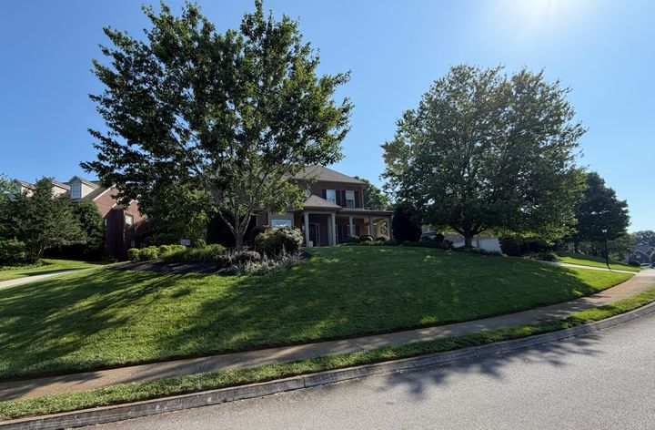
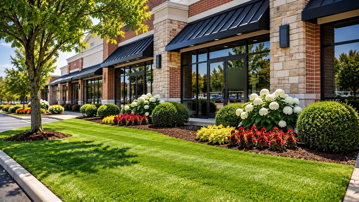
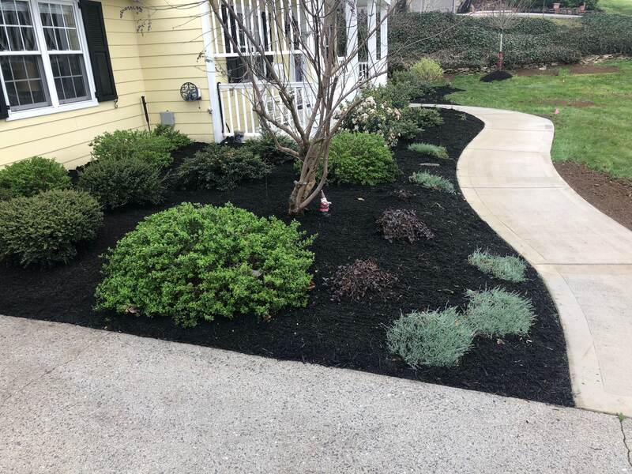
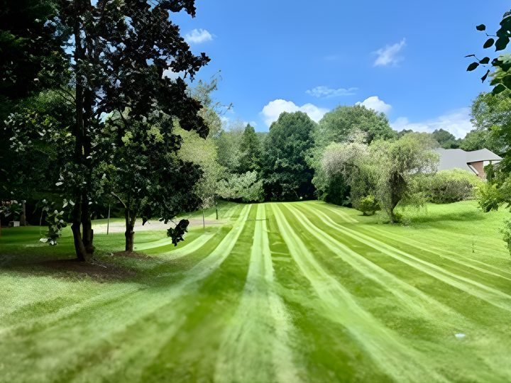

Residential
Weekly mowing, edging and striping, plus weed control, aeration, shrub care and mulch for homes across the Knoxville area.
- Single-family homes
- Estates & acreage
- New construction lawns
- Seasonal plans
Do you want to look out and see a beautiful, healthy lawn? Besides enhancing curb appeal, great lawns improve your property’s value. Still, those aren’t the only benefits of professional lawn maintenance from experts like The Yard Force.
Are you in the Greater Knoxville, TN, area? Locals trust us to handle their lawn care jobs of all sizes, from seasonal lawn fertilization down to pest management. We’re passionate about healthy, safe, and gorgeous yards, so you’ll enjoy an excellent return on your investment when you hire our lawn care experts!

Residential and commercial lawn care in the Knoxville area — weekly, monthly and annual plans.
Homeowners and property managers get the same crews, the same equipment and the same standard every visit.

Weekly mowing, edging and striping, plus weed control, aeration, shrub care and mulch for homes across the Knoxville area.

Property managers count on us for full-service grounds care on a 12-month agreement billed monthly: mowing, trimming, mulch, bed care, leaf removal and irrigation checks.
A look at the properties our maintenance crews keep sharp every week.
 ★★★★★
★★★★★“Top notch company to work with. They were very prompt with my estimate and got my job scheduled in a timely manner that worked for my schedule. The crew was on time, kind, and did a fantastic job at a very reasonable price! I would highly recommend The Yard Force to anyone in the Greater Knoxville area that needs yard work done.”
Jordan Enix ★★★★★
★★★★★“The Yard Force guys can always be relied on to get the job done, efficiently and with great competence! Wow! And, of course, great logo!”
Conrad H. Blickenstorfer
★★★★★“We have used the Yard Force for two years now. They are professional, hard working and pay attention to detail. We have used them for leaf removal, as well as mulch and pine straw installation. We have a TON of leaves in the fall and they come blow them out of the yard and haul them away. I have already recommended their services to many neighbors.”
Jenny Guza · January 2023 ★★★★★
★★★★★“Great work 👏🏻”
Tiffany Poole · July 2023Our process is simple. Just contact us to get started.
From there we will provide you with a free consultation and quote. Before long the job is done!

Mowing starts at $65 and goes up depending on acreage. Weeding starts at $45 depending on time and materials. Fertilization starts at $125, and aeration, fertilizer and seed starts at $225, both depending on acreage. Annuals start at $300 depending on quantity and variety.
These are wide, ballpark ranges, not a quote. Multiple factors affect the final price, including density, terrain and grade, access points to the site, the scope of work, materials and location. For an in-depth quote, it’s best for us to come out and see the property in person, so we can make sure you’re not being overcharged.
Typically, lawn maintenance services include:
Weed control is also helpful.
The Yard Force offers reliable lawn maintenance in the Knoxville area. You’ll love how our expert crew makes your yard the envy of the neighborhood, whether that’s a weekly or yearly appointment.
Call The Yard Force at (865) 290-8815 today and GET A FREE QUOTE!
Tell us about your property and project. This request goes straight to our lawn maintenance team, and we'll follow up to schedule a free on-site visit.
Lawn Maintenance Quote Request
We received your request and will be in touch shortly with your free quote. Need us sooner? Call (865) 290-8815.